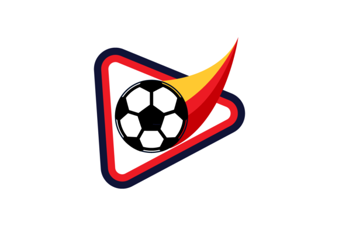

Futbol
18/02/22
Contexto
El fútbol es uno de los deportes más vistos y jugados del mundo y se podria decir que es el mejor del muando. Profesionalmente, los jugdores forman parte de sus equipos nacionales e individuales. Forman parte de las competencias diefrentes y estas competencias tienen sus reglas futbolisticas.
Desarrollo
El fútbol o futbol (del inglés británico football, traducido como balompié) es un deporte de equipo jugado entre dos conjuntos de once jugadores cada uno y algunos árbitros que se ocupan de que las normas se cumplan correctamente. Es ampliamente considerado el deporte más popular del mundo, pues lo practican unas 270 millones de personas.4 También se le conoce como futbol asociación o fútbol asociación, nombre derivado de The Football Association, primera federación oficial del mundo en este deporte y que utilizó ese nombre para distinguirlo de otros deportes que incluyen la palabra "futbol" o "fútbol".5 En algunos países de habla inglesa también se le conoce como soccer, abreviatura de association, puesto que el nombre de football en esos países se asocia mayoritariamente a otros deportes con esa denominación
Motivacion
Creo que elegi este tema porque el futbol es mi deport favorito y porque me parece el mejor deporte del mundo. Todos los dias interacruo de alguna forma con este deporte; es por eso que elegi este tema